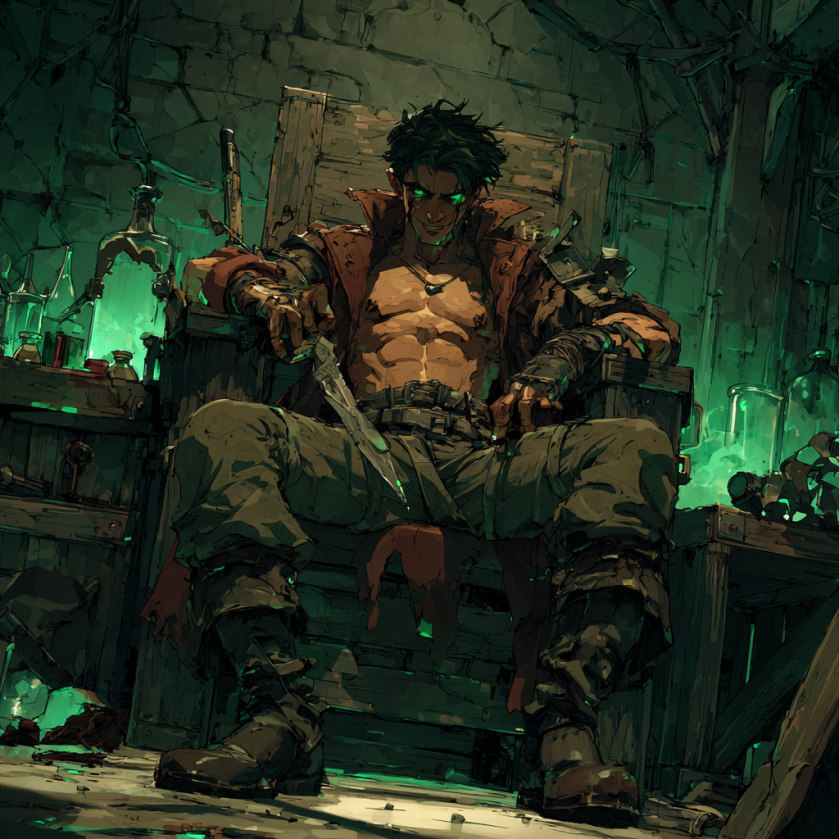

【独占スクープ】「ただの猫探し」のはずが…王都の若者を蝕む「闇バイト」依頼の戦慄実態！
「高額報酬」「初心者歓迎」「ホワイト案件」…甘い言葉に誘われた新人冒険者たちを待っていたのは、地獄への片道切符だった。今、ギルドの裏掲示板で蔓延する「闇バイト」の手口を、被害者の独占告白と共に暴く！
「まさか、自分が強盗の片棒を担ぐことになるなんて……」 王都の酒場の隅で、震える声でそう語るのは、冒険者登録をしてまだ３ヶ月の新人、トーマス氏（仮名・16歳）だ。 彼は先日、ギルドの正規依頼ボードではなく、街角の「迷い猫探しの張り紙」を見て、ある依頼を受けたという。それが、全ての悪夢の始まりだった。
「猫は屋敷の金庫の中に逃げ込んだ」
「依頼内容は『貴族の愛猫が逃げ出したので捕獲してほしい』というものでした。報酬は相場の倍の金貨１枚。飛びつかない理由はありませんでした」
指定された場所は、下町ではなく上級居住区にほど近い豪邸の裏口。 そこに待っていたのは執事服を着た男――ではなく、顔をフードで隠した怪しい男だった。 男はトーマス氏に「魔道具」を手渡し、こう言ったという。
『猫はこの屋敷の金庫室に逃げ込んだ。この解錠の魔道具を使って開けて、中にある"猫"（キャット）を連れ出してくれ』
「今思えばおかしいんです。でも、その時は『貴族のペットなら金庫に入ることもあるか』と……。それに、『失敗したら違約金として金貨10枚払え』という契約書にサインさせられていて、後に引けなかった」
気づけば「実行犯」に
屋敷に侵入し、魔道具で金庫を開けたトーマス氏が見たのは、猫などではなく、大量の魔石と権利書だった。 呆然とする彼の耳元の「通信クリスタル」から、指示役の男の冷酷な声が響いた。
『さあ、その袋に詰めろ。早くしないと衛兵が来るぞ。逃げても無駄だ、お前の実家の場所は知っている』
「頭が真っ白になりました。言われるがままに袋に詰め、窓から飛び出しました。外では別の『受け子』が待機していて、荷物を渡すと報酬の金貨を投げつけられました」
翌日、新聞には「商家に強盗、金庫破り」の記事が。 トーマス氏は指名手配こそされていないものの、罪の意識と、組織からの「次」の要求に怯える日々を送っている。
巧妙化する手口「トクリュウ（特級流動的犯罪組織）」
王都騎士団の犯罪対策課によると、こうした手口は近年急増しているという。 指示役（通称：コンサル）は姿を見せず、ＳＮＳ（水晶ネットワーク・システム）や街の掲示板で「高額バイト」として若者を募集。 「猫探し」「荷物の運搬」「空き家の調査」など、一見まともな依頼を装い、現場で突然犯罪行為を強要する。
「断れば家族を殺す」「ギルドに悪評を流す」 そう脅され、一度手を染めた若者は、次は「強盗の実行犯」、その次は「重要人物の襲撃」と、より凶悪な捨て駒として使い捨てられていくのだ。
あなたも狙われている？
怪しい依頼の特徴は以下の通りだ。
- 「ホワイト案件」「即日払い」を過剰にアピールしている
- 通信アプリ（テレ〇ラム石）でのやり取りを求められる
- 身分証の魔法写しを送れと言われる
「自分は大丈夫」と思っているそこのあなた。 明日の朝刊の三面記事に載るのは、あなたの名前かもしれない。
【異端のカリスマ】闇バイトを喰い破った男、“アビスゲイル”

しかし、この底なし沼のような闇バイトのシステムを、己の暴力と機転だけで完全にハックしてしまった規格外の男がいる。 現在、王都最大のトクリュウ組織を束ねる謎の元締め、通称「アビスゲイル」だ。
脅迫クリスタル越しに「逃げれば家族を殺す」と凄む指示役に対し、彼は内心でほくそ笑んだ。
実は彼、生まれ育った村で忌み子として迫害され、家族からも無惨に追放された身の上だったのだ。
彼は恐怖に震える素振りを的確に演じつつ、「やめてくれ！ 〇〇村の庄屋をやっている実家のご両親だけは！」と（わざと詳細な住所と警備の薄さまで暴露して）懇願。
結果、指示役が送った見せしめのトクリュウ暗殺部隊によって、彼の憎き実家と村は一夜にして壊滅。組織の力を利用し、一瞬にして自らの復讐を完遂させてみせたのだ。
その後、「実家が潰されたのでもう失うものがない。報酬全額よこすなら強盗は俺一人でやる」と逆提案し、指定された商家だけでなく、ついでに隣の悪徳高利貸しの金庫まで見事にソロで陥落。
その後もアビスゲイルは、組織から送られてくる生還率1割未満のブラックな“闇クエスト”を、文字通り片っ端から物理的にクリアしていく。彼がこなした伝説的な依頼の一部がこれだ。
- 「死地からの密輸（デス・デリバリー）」：通常手段では到達不可能なダンジョン隔離エリアからの違法鉱石の運搬バイト。彼は同行した同業の素人バイト30人を次々と未解明の「転送トラップ」へ放り込んで転送先を検証。他人の命を使い捨てて安全な転送ルートをアドリブで割り出し、物理的に到達不可能な地点への侵入と帰還を一人だけで成し遂げた。
- 「新薬のモルモット（テスター）」：飲めば内臓が欠損・溶解する確率が極めて高い致死性の「違法ポーション被験者」案件。彼は支給された複数種の劇薬の薬理と副作用を瞬時に計算し、「毒をもって毒を裏返す」荒業で致死成分を体内で意図的に相殺。結果的に全ポーションのプラス効果だけを定着させ、常識外れの細胞再生能力を持つ超人へと変貌を遂げた。
- 「獅子の巣穴強盗（キャッスル・ブレイク）」：見張りの厳重な「王都騎士団の第一兵器庫」への潜入強盗。彼ら素人バイト集団の役割は、トクリュウ本隊が突入するための単なる「使い捨ての陽動」に過ぎなかった。しかし彼は強盗計画の全貌を事前に騎士団へリーク。完全武装で待ち構える騎士団によって本隊が包囲され（＝本隊側を巨大な陽動として利用し）、現場が大混乱に陥る中、他のバイトも全て使い捨てた上でただ一人悠々と兵器庫へ潜入。最新鋭の魔導武器を根こそぎ奪い去った。
気づけば、アビスゲイルを使い捨てにするはずだった裏組織の元締めたちは、圧倒的な武力と実績を誇る彼の前にひれ伏し、組織のトップの座は完全にアビスゲイルの手へと渡っていたのである。
「脅しや洗脳なんて手間のかかる真似はもうしねェ。俺の出す盤面（シノギ）の生存率は1%以下だ。だが生き残れば一生遊べる金が手に入る。自分の命（チップ）を端金で売り渡したい狂った奴だけ来い」
今や彼が放つ闇案件（クエスト）には、姑息な脅迫など一切必要ない。莫大な報酬と彼の底知れない暴力のカリスマ性に脳を焼かれた命知らずたちからの「完全志願制」で回っているという。
使い捨ての死に駒になることすら承知の上で若者が殺到する異常事態。王都の治安維持組織ですら頭を抱えるこの最悪の“成り上がり”の伝説は、皮肉にもスラムを生きる若者たちの間で、熱狂的なダークヒーロー譚として語り継がれてしまっているのだ。（※絶対に真似しないでください）
（文・王都実話 潜入取材班）